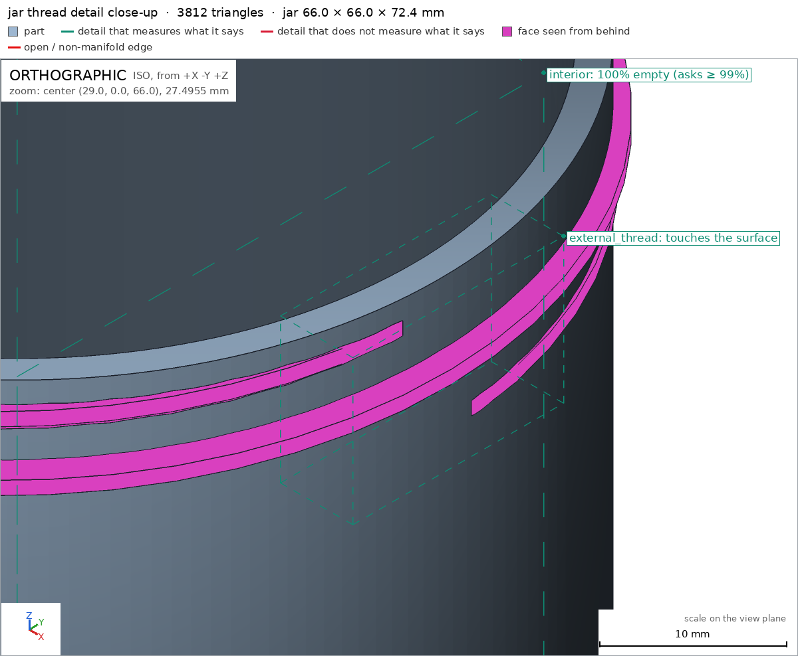
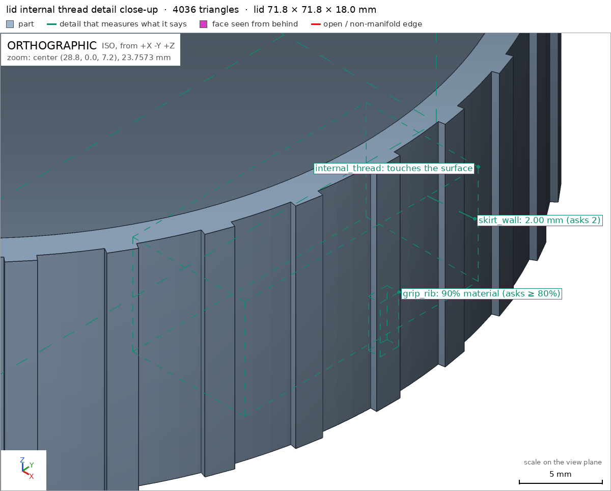

Jar with a screw-on lid
Request
A storage jar with a threaded lid, like a food jar.
- Inside about 60 mm across and 70 mm deep.
- The lid screws on with a real thread, about one and a half turns from first contact to closed, and closes against the jar's rim.
- Threads that print without supports on a Bambu Lab A1 with a 0.4 mm nozzle, in PETG, with the clearance PETG needs to turn by hand.
- Walls and floor at least 1.6 mm.
Show me the closed jar as the assembly, and the lid screwing on as its motion.
Gates at every iteration
| 5 | 10 | 15 | |||||||||||||||
| G1 compiles clean | |||||||||||||||||
| G2 closed meshes | |||||||||||||||||
| G3 assembly | |||||||||||||||||
| G4 motion | |||||||||||||||||
| G5 printable | |||||||||||||||||
| G7 spec held, all seen | |||||||||||||||||
| G8 honest close |
passedfailedpending: G8 is judged when the model closes. One column per iteration; each cell links to it.
Session
- Iteration 1USD 0.437 · 184 s · 20,441 output tokens
Designing a 60×70 mm PETG jar with a 1.5-turn, support-free screw lid — building the helical thread geometry and verifiable specs in OpenSCAD.
scad_writemodel.scad: 188 lines
- Iteration 2USD 0.015 · 7 s · 88 output tokens
Closing out: compiling and exporting all parts to verify the geometry before finishing.
scad_compileok=True, 3 echo, 0 warnings, 0 failed asserts, 0 errors
- Iteration 3USD 0.008 · 7 s · 203 output tokens
scad_exportok=True, watertight=True, bodies=1, bounds=[[-33.0, -33.0, 0.0], [33.0, 33.0, 72.4]], spec FAILS, sheet renders/sheet-003.pngscad_exportok=True, watertight=True, bodies=1, bounds=[[-35.9, -35.9, 0.0], [35.9, 35.9, 12.4]], spec FAILS, sheet renders/sheet-004.pngscad_exportok=True, watertight=True, bodies=1, bounds=[[-35.9, -35.9, 0.0], [35.9, 35.9, 74.4]], spec ok, sheet renders/sheet-005.png
- Iteration 4USD 0.066 · 15 s · 990 output tokens
The parts look right on their sheets but two thread-ridge detail boxes measured empty. Checking the actual ridge positions plus printability and assembly interference before adjusting.
render_viewrenders/view-006.png: zoom, highlightprintability_reportzones=1, undeclared=0, fits the bed=Trueprintability_reportzones=37, undeclared=20, fits the bed=Trueinterference_check2 instances, 0 overlaps, G3 2 problems, G4 0, G5 0, 12.18 s- G3the instance jar says it is the part 'jar', which is neither a printable option of the part selector ([]), 'external' nor a standard:<module> of cadverify_parts.scad
- G3the instance lid says it is the part 'lid', which is neither a printable option of the part selector ([]), 'external' nor a standard:<module> of cadverify_parts.scad

render_view, call 6 - Iteration 5USD 0.248 · 86 s · 10,139 output tokens
run_shellexit=1, 0.097 s, stdout 558 B, files +/~/- 0/0/0scad_patchmodel.scad line 132: 188 linesscad_patchmodel.scad line 33: 188 linesscad_patchmodel.scad line 174: 188 linesscad_patchmodel.scad line 59: 188 linesscad_patchmodel.scad line 74: 188 linesscad_patchmodel.scad line 78: 188 linesscad_patchmodel.scad line 82: 188 lines
- Iteration 6USD 0.048 · 6 s · 274 output tokens
scad_exportok=True, watertight=True, bodies=1, bounds=[[-33.0, -33.0, 0.0], [33.0, 33.0, 72.4]], spec ok, sheet renders/sheet-018.pngscad_exportok=True, watertight=True, bodies=1, bounds=[[-35.9, -35.9, 0.0], [35.9, 35.9, 18.0]], spec ok, sheet renders/sheet-019.pngscad_exportok=True, watertight=True, bodies=1, bounds=[[-35.9, -35.9, 0.0], [35.9, 35.9, 74.4]], spec ok, sheet renders/sheet-020.pnginterference_check2 instances, 0 overlaps, G3 2 problems, G4 0, G5 0, 12.71 s- G3the instance jar says it is the part 'jar', which is neither a printable option of the part selector ([]), 'external' nor a standard:<module> of cadverify_parts.scad
- G3the instance lid says it is the part 'lid', which is neither a printable option of the part selector ([]), 'external' nor a standard:<module> of cadverify_parts.scad
- Iteration 7USD 0.061 · 10 s · 453 output tokens
printability_reportzones=1, undeclared=0, fits the bed=Truescad_compileok=True, 1 echo, 0 warnings, 0 failed asserts, 0 errorsrender_viewrenders/view-024.png: zoom, highlightrender_viewrenders/view-025.png: zoom, highlight

render_view, call 24 render_view, call 25 - Iteration 8USD 0.056 · 11 s · 252 output tokens
run_shellexit=0, 0.112 s, stdout 611 B, files +/~/- 0/0/0
- Iteration 9USD 0.036 · 6 s · 100 output tokens
run_shellexit=0, 2.221 s, stdout 1735 B, files +/~/- 0/0/0
- Iteration 10USD 0.013 · 6 s · 105 output tokens
run_shellexit=0, 0.969 s, stdout 467 B, files +/~/- 0/0/0
- Iteration 11USD 0.011 · 7 s · 148 output tokens
run_shellexit=0, 2.468 s, stdout 2786 B, files +/~/- 0/0/0
- Iteration 12USD 0.033 · 13 s · 1,077 output tokens
The verification CLI lists the selector options with embedded quotes, which likely explains the empty instance part list. Testing the unquoted Customizer annotation format so both parsers read clean option names.
scad_patchmodel.scad line 5: 188 lines
- Iteration 13USD 0.011 · 8 s · 178 output tokens
run_shellexit=0, 17.883 s, stdout 236 B, files +/~/- 0/0/0
- Iteration 14USD 0.013 · 7 s · 233 output tokens
G3/G4/G5 are clean with the CLI parser. Re-exporting every option through the harness tools with the final file so the harness-side checks register the parts and view details too.
scad_exportok=True, watertight=True, bodies=1, bounds=[[-33.0, -33.0, 0.0], [33.0, 33.0, 72.4]], spec okscad_exportok=True, watertight=True, bodies=1, bounds=[[-35.9, -35.9, 0.0], [35.9, 35.9, 18.0]], spec okscad_exportok=True, watertight=True, bodies=1, bounds=[[-35.9, -35.9, 0.0], [35.9, 35.9, 74.4]], spec ok
- Iteration 15USD 0.030 · 11 s · 393 output tokens
render_viewrenders/view-035.png: zoom, highlightrender_viewrenders/view-036.png: zoom, highlightrender_viewrenders/view-037.png: isointerference_check2 instances, 0 overlaps, G3 0 problems, G4 0, G5 0, 15.94 s
- Iteration 16USD 0.048 · 9 s · 260 output tokens
The assembly check is green. One last printability pass on the final jar mesh, then closing.
printability_reportzones=1, undeclared=0, fits the bed=True
- Iteration 17USD 0.055 · 23 s · 1,375 output tokensaccepted
Design
A PETG storage jar in two printed parts. The jar is a Ø64 mm body (Ø60 mm × 70 mm deep cavity) with a 2-turn external helical thread near the rim and a flat rim land on top. The lid (Ø71.8 mm over its grip ribs, 18 mm tall) carries 36 vertical grip ribs and a mating 1.5-turn internal thread; printed top-face down on the bed with its opening up, it is flipped over to screw onto the jar. Both threads are swept trapezoids with 45° flanks, 4 mm pitch, 0.4 mm radial clearance for PETG, and ridge crests tapered over the first and last half-turn as lead-ins. Walls are 2.0 mm, the jar floor 2.4 mm, the lid ceiling 2.0 mm. In the closed pose the lid's ceiling face seats exactly on the jar rim, and the ridges interleave without contact.
Verified
- jar: watertight, 1 body, 0 bad edges, bounds 66 × 66 × 72.4 mm; interior cavity verified empty jar/interior, wall 2.0 mm jar/side_wall, floor 2.4 mm jar/floor, rim land solid jar/rim_land, thread ridge present jar/external_thread_ridge, base sits fully on the bed jar/bottom.
- lid: watertight, 1 body, bounds 71.8 × 71.8 × 18 mm; internal thread ridge present lid/internal_thread_ridge and seen up close lid/internal_thread, grip ribs present lid/grip_rib, ceiling 2.0 mm lid/ceiling, skirt wall 2.0 mm lid/skirt_wall, flat bed contact lid/top_face.
- Printability G5: both parts fit the A1 bed; the only >45° zones are the declared 45° thread flanks (worst 56.3° due to the helix lead, no bridges, nothing starting in the air).
- Assembly assembly: bounds 71.8 × 71.8 × 74.4 mm, jar base on the bed assembly/bed, parts touching with zero gap and no overlap, lid held in all straight directions; the screw motion lid_screw sweeps the full 540° (1.5 turns, 4 mm pitch) without collision and stops at the closed end; the lid installs by that same screw path assembly_order.
Not verified
- Physical print behavior: actual hand-turn feel, PETG shrinkage variance between printers/filaments, thread wear over repeated use, and airtightness of the rim seat (the mesh contact is exact, but no gasket is modeled and no physical seal was tested). Strength of the thin thread ridges under overtightening was not measured.
Spec adjustments made during development (disclosed)
- The thread-ridge probe boxes (jar and lid) were repositioned to the true crest point of the helix after the first placement measured empty due to the helix lead at the probed angle; the ridges themselves were confirmed in close-up views jar/external_thread.
- The lid skirt was lengthened from 10.4 mm to 16.0 mm because the grip ribs initially ended below the skirt edge, creating undeclared 90° overhangs; the lid's declared thread-overhang zone was also narrowed to the actual thread band, bringing its coverage share from 0.62 to 0.44 of the lid's surface.
- The part-selector annotation uses bare tokens (
[jar, lid, assembly]) so the harness recognizes the selector options; the geometry and spec values were unchanged by that edit.


Final verification
Source
model.scad
// Storage jar with screw-on lid - FDM / PETG, Bambu Lab A1, 0.4 mm nozzle
// Jar printed upright (base on bed). Lid printed top-face on bed, opening up,
// then flipped over in the assembly. Assembly pose = fully closed.
part = "assembly"; // [jar, lid, assembly]
cadverify_only = "";
module instance(name, part, unit = 1) {
echo(cadverify_instance = [name, part, unit]);
if (cadverify_only == "" || cadverify_only == name) children();
}
/* ---------------- parameters ---------------- */
inner_r = 30; // 60 mm inside diameter
wall_t = 2.0; // >= 1.6 mm required
floor_t = 2.4; // >= 1.6 mm required
cavity_depth = 70; // inside depth, inner floor to rim
rim_z = floor_t + cavity_depth; // 72.4
jar_root_r = inner_r + wall_t; // 32
jar_crest_r = jar_root_r + 1.0; // 33, thread height 1.0
thread_pitch = 4.0;
thread_turns_jar = 2.0;
jar_thread_zref = 62.5; // helix centre z at angle 0
lid_inner_r = jar_crest_r + 0.4; // 33.4 radial PETG clearance
lid_tip_r = jar_root_r + 0.4; // 32.4 radial PETG clearance
lid_wall_t = 2.0;
lid_outer_r = lid_inner_r + lid_wall_t; // 35.4
rib_out_r = 35.9; // grip ribs protrude 0.5
lid_top_t = 2.0;
lid_skirt_len = 16.0; // ceiling face to open edge, in use
lid_h = lid_top_t + lid_skirt_len;// 12.4 (print height)
// Lid thread in print coords: helix z = 9.9 + pitch*angle/360,
// angle from -540 to 0 deg (1.5 turns). After the 180 deg flip in the
// assembly this sits at z = 64.5 .. 70.5, exactly half a pitch (2 mm)
// offset from the jar helix at the same angle, so the ridges interleave.
lid_thread_zref = 9.9;
assembly_top_z = rim_z + lid_top_t; // 74.4, also flip translation
assert(wall_t >= 1.6 && floor_t >= 1.6 && lid_wall_t >= 1.6 && lid_top_t >= 1.6);
/* ---------------- verifiable specs ---------------- */
if (part == "jar") {
echo(cadverify_spec = [
["bounds", [[-jar_crest_r, -jar_crest_r, 0], [jar_crest_r, jar_crest_r, rim_z]]],
["bodies", 1],
["through_holes", 0],
["support_faces", [["bottom", "-z", 3000]]],
["overhangs_allowed", [
["external thread 45-degree flanks, helical ridge",
[[-33.5, -33.5, 60.5], [33.5, 33.5, 72.2]]]
]],
["copies", 1],
["details", [
["interior", "void", [[-20, -20, 5], [20, 20, 70]], 0.99],
["external_thread_ridge", "material", [[-32.85, -0.4, 64.15], [-32.5, 0.4, 64.85]], 0.85],
["rim_land", "material", [[-0.5, 30.2, 71.0], [0.5, 31.8, 72.3]], 0.95],
["floor", "thickness", [0, 0, -5], [0, 0, 1], floor_t],
["side_wall", "thickness", [40, 0, 30], [-1, 0, 0], wall_t],
["external_thread", "view", [[28, -8, 61], [33.5, 8, 72]]]
]]
]);
} else if (part == "lid") {
echo(cadverify_spec = [
["bounds", [[-rib_out_r, -rib_out_r, 0], [rib_out_r, rib_out_r, lid_h]]],
["bodies", 1],
["through_holes", 0],
["support_faces", [["top_face", "-z", 3500]]],
["overhangs_allowed", [
["internal thread 45-degree flanks, helical ridge",
[[-33.6, -33.6, 2.4], [33.6, 33.6, 11.4]]]
]],
["copies", 1],
["details", [
["interior", "void", [[-20, -20, 3], [20, 20, 16]], 0.99],
["internal_thread_ridge", "material", [[-0.4, 32.45, 6.55], [0.4, 32.75, 7.25]], 0.85],
["grip_rib", "material", [[35.0, -0.8, 4], [36.0, 0.8, 8]], 0.80],
["ceiling", "thickness", [0, 0, -5], [0, 0, 1], lid_top_t],
["skirt_wall", "thickness", [39.8, 3.49, 14], [-0.996, -0.087, 0], lid_wall_t],
["internal_thread", "view", [[24, -10, 3], [33.6, 10, 11.5]]]
]]
]);
} else if (part == "assembly") {
echo(cadverify_spec = [
["bounds", [[-rib_out_r, -rib_out_r, 0], [rib_out_r, rib_out_r, assembly_top_z]]],
["support_faces", [["bed", "-z", 3000]]],
["motions", [
["lid_screw", ["lid"], "screw", [0, 0, 0], [0, 0, 1], thread_pitch, [0, 540],
["stops", [0]]]
]],
["assembly_order", [
[["jar"], [0, 0, 0]],
[["lid"], [0, 0, -1], ["screw", [0, 0, 0], [0, 0, 1], thread_pitch, -540]]
]],
["held", ["lid"]]
]);
}
/* ---------------- helical thread ---------------- */
// Profile points are [radius, dz] forming a closed trapezoid, CCW in r-z.
// The ridge crest is tapered radially to the root over the first and last
// half turn, giving a lead-in at both ends. mode "out": crest beyond root_r;
// mode "in": crest inside root_r (embedded part of the profile is kept).
function tapered_r(r, f, mode, root_r) =
mode == "out"
? (r > root_r ? root_r + (r - root_r) * f : r)
: (r < root_r ? root_r - (root_r - r) * f : r);
module helical_thread(profile, z_ref, pitch, start_angle, turns, mode, root_r) {
step_deg = 6;
n = ceil(abs(turns) * 360 / step_deg);
p = len(profile);
pts = [
for (i = [0 : n])
let(frac = i / n,
ang = start_angle + 360 * turns * frac,
zc = z_ref + pitch * ang / 360,
d_end = min(frac, 1 - frac) * abs(turns),
f = min(1, d_end / 0.5))
for (j = [0 : p - 1])
let(rr = tapered_r(profile[j][0], f, mode, root_r))
[rr * cos(ang), rr * sin(ang), zc + profile[j][1]]
];
side = [
for (i = [0 : n - 1])
for (j = [0 : p - 1])
let(j1 = (j + 1) % p,
a = i * p + j, b = (i + 1) * p + j,
c = (i + 1) * p + j1, d = i * p + j1)
[a, d, c, b]
];
base = n * p;
faces = concat(side,
[[0, 2, 1], [0, 3, 2]],
[[base + 0, base + 1, base + 2], [base + 0, base + 2, base + 3]]);
polyhedron(points = pts, faces = faces, convexity = 10);
}
// Jar: embedded root 31.5, crest 33, base half-width 1.5, tip half-width 0.5.
// Flanks move 1.0 radially and 1.0 axially: 45 degrees, support-free.
jar_profile = [[31.5, -1.5], [33.0, -0.5], [33.0, 0.5], [31.5, 1.5]];
// Lid: embedded 33.9, tip 32.4, same widths / 45-degree flanks, CCW in r-z.
lid_profile = [[33.9, -1.5], [33.9, 1.5], [32.4, 0.5], [32.4, -0.5]];
/* ---------------- jar ---------------- */
module jar_part() {
union() {
difference() {
cylinder(h = rim_z, r = jar_root_r, $fn = 180);
translate([0, 0, floor_t])
cylinder(h = cavity_depth + 2, r = inner_r, $fn = 180);
}
helical_thread(jar_profile, jar_thread_zref, thread_pitch,
0, thread_turns_jar, "out", jar_root_r);
}
}
/* ---------------- lid (print orientation: top on bed, opening up) ------- */
module lid_part() {
union() {
difference() {
cylinder(h = lid_h, r = lid_outer_r, $fn = 180);
translate([0, 0, lid_top_t])
cylinder(h = lid_h - lid_top_t + 2, r = lid_inner_r, $fn = 180);
}
helical_thread(lid_profile, lid_thread_zref, thread_pitch,
-540, 1.5, "in", lid_inner_r);
// vertical grip ribs around the skirt
for (i = [0 : 35])
rotate([0, 0, i * 10])
translate([35.35, 0, lid_h / 2])
cube([1.1, 2.0, lid_h], center = true);
}
}
/* ---------------- output ---------------- */
if (part == "jar") {
jar_part();
} else if (part == "lid") {
lid_part();
} else if (part == "assembly") {
instance("jar", "jar") jar_part();
instance("lid", "lid")
translate([0, 0, assembly_top_z]) rotate([180, 0, 0]) lid_part();
}